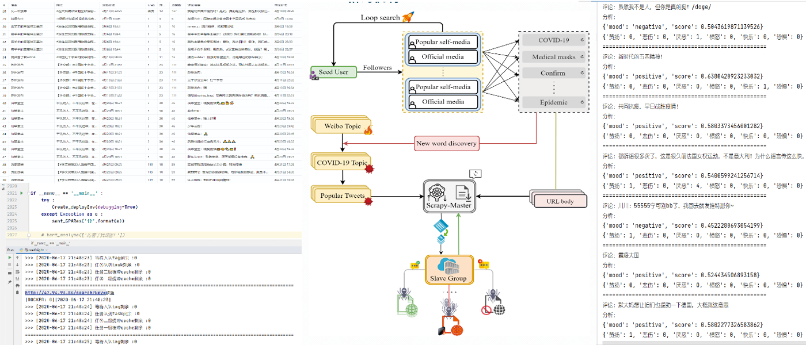
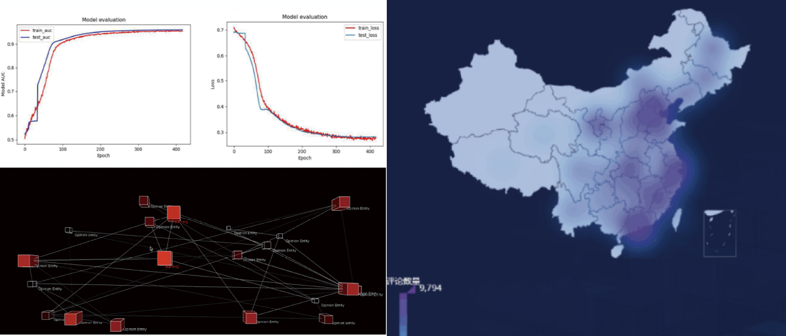
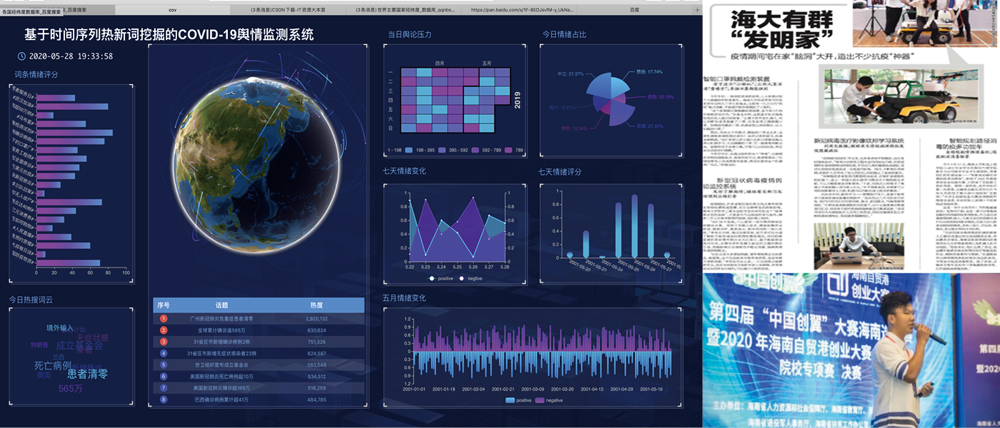

COVID-19 公众情绪分析
基于新浪微博疫情话题相关的用户评论数据，进行多维度情绪分析。并对最终结果进行可视化设计和前端大屏编码，将公众舆情实时，清晰的展示
项目引入
项目背景
疫情期间公众情绪持续紧张
网上各类舆论事件频繁发酵
谣言传播迅速，辟谣不及时
用户调研
政府部门需对公众情绪和反馈有实时了解
企业及组织需利用用户反馈进行精准营销
自媒体用户创作时需对热点雷区进行规避
需求分析
对高刷新率公众言论做舆情预警
对互联网上错误信息的及时甄别
对多维度数据的有效抽象和反馈
落地过程
数据采集
基于Scrapy+Redis进行数据采集
Hash进行去重配合IP池策略反爬取
采取 DOM 结构信息的提取方法器
情绪分析
首先试用褒贬字典匹配算法尝试分析
引入神经网络模型，试用lstm分析
最终确定Transformer预训练模型
数据展示
首先尝试无框架的自主前端设计
后尝试使用 DATAV 可视化服务
最终确定 E-Chart 开源模版

落地过程
Transformer
位置编码高效解决上下文词义影响
自注意力机制解决分词间信息关系
参数优化
对英文字符进行整体遮罩
对数字字符进行特殊遮罩
可视化设计
通过processing编码实时舆情状况图
使用前端大屏作为数据展示的展示入口

项目总结
团队分工
分工针对数据获取和数据处理分离
个人承担 50% 的编码和设计工作
完成了针对原数据分析展示的任务
竞赛奖项
中国计算机设计大赛全国一等奖
人工智能挑战赛区域赛区三等奖
接受海南日报抗疫创新专题报道
个人收获
初步了解及运用了 NLP 相关技术
完善了对可视化技术和设计的认识
多场项目路演提升了个人的表达能力
